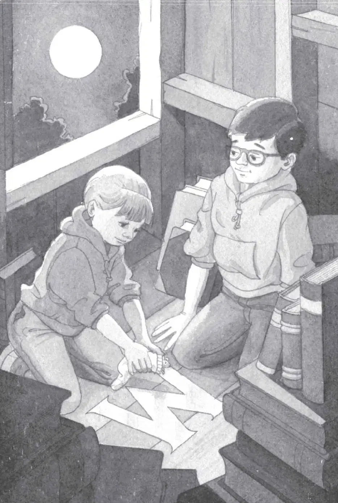
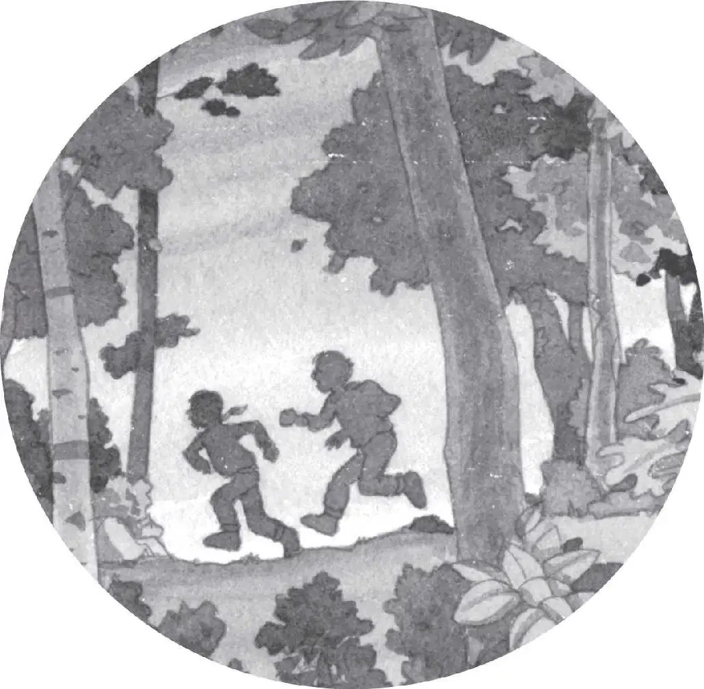

Jack opened his eyes.
Then he opened his fist. He stared at the moonstone in his hand. It was clear and smooth. It almost seemed to glow.
“We’re home,” said Annie.
Squeak.
Annie and the mouse were looking out the window.
Jack looked with them.
The sun was setting in the distance.
No time at all had passed in Frog Creek.
They heard their neighbor’s dog, Henry, bark. They heard crickets chirping.
In the distance, they could see their dad step out of their house. He stood on their porch.
“Ja-ack! An-nie!” he called.
Time for dinner.
“Com-ing!” Annie shouted.
Jack sat back on his heels. He looked at the moonstone again.
“I guess we have one of the four things,” he said.
“We’ll look for the other three tomorrow,” Annie said.
Jack nodded. They had a lot more work to do.
He put the moonstone in his pocket.
He pulled on his pack.
“Ready?” he said.
“Wait,” said Annie. She took off one of her sneakers. She pulled off her sock. Then she put her sneaker back on.
“What are you doing?” said Jack.
“I’m making a bed,” she said.
“A what?”
“Bed! You know, for Peanut to sleep in.” Annie picked up the mouse. She tucked it inside her sock.
“ ’Night, Peanut,” she said softly.
Squeak.
“Oh brother,” said Jack.
Annie held the mouse close to Jack.
“Kiss it goodnight, Jack,” she said.
“Don’t be silly,” he said. “Let’s go.”
“Thanks for helping us,” Annie said to the mouse.
She put Peanut gently down on the glowing M. She pulled Morgan’s message out of her pouch. And put it next to the mouse.

“See you tomorrow,” she said. Then she started down the ladder.
Jack stared at the mouse. It looked back at him.
For a moment, its dark eyes looked old and wise.
“Come on, Jack!” called Annie.
Jack kissed its tiny head.
“Night-night, Peanut,” he whispered.
Then Jack headed down the rope ladder.
It got darker and darker as he went down.
By the time he stepped onto the ground, it was almost completely black.
“Where are you?” said Jack.
“Here,” said Annie. Her hand bumped his. He took it.
“Careful,” he said.
“Careful yourself,” she said.
Together they took off through the cool, dark woods.
They moved silently and swiftly—two shadow warriors returning home.
